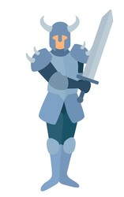
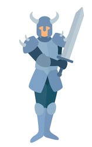
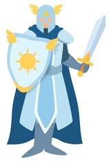
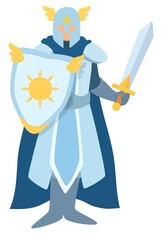

Overview
Purpose
The purpose of this website will be to break down the basics of each playable class within Dungeons and Dragons. This will be done by dividing them up by combat style on the main page, then going into specifics of each class within said combat style in secondary pages.
Audience
This website is designed for players of Dungoens and Dragons to make character creation easier. Whether you are a beginner looking for something to start your first campaign, or a veteran wanting to play as something different then what they normally play as.
Branding
Website Logo
Style Guide
Color Palette
Palette URL: https://coolors.co/ea242a-ecdeb9-dccaa0-bc3c3e| Primary | Secondary | Accent 1 | Accent 2 |
|---|---|---|---|
| [#EA242A] | [#ECDEB9] | [#DCCAA0] | [#BC3C3E} |
Typography
Heading Font: Eczar SemiBold
Paragraph Font: Merriweather
Normal paragraph example
A fierce warrior of primitive background who can enter a battle rage. This battle rage can exist within a barbarian for a multitude of reasons, and can be used to the barbarians advantage to fuel themselves into a battle frenzy, giving them both uncanny reflexes and resilience, making them capable of intense feats of strength.
Colored paragraph example
A scoundrel who uses stealth and trickery to overcome obstacles and enemies. Their skills specialize in exploiting the vulnerabilities of their enemies to gain the upper hand both in and out of combat.
Navigation
Site Map
Content
Home page
Dungeons and Dragons is an expansive tabletop role-playing game where the only limit is the imagination of both you and the members of your party. However, the game can be intimidating starting out, especially with all of the character creation options. Here at D&D Classes, our goal is to make character creation easier by providing basic breakdowns of all playable classes. This will help provide players with a greater understanding needed for crafting an enjoyable character.
Images for the Home page
 


Martial Classes
Martial Classes:
Classes whose combat play style focuses on the use of weapons and martial arts. Some if not all of these may dabble in spellcasting, but that is not the priority for these classes.
Barbarian
A fierce warrior of primitive background who can enter a battle rage. This battle rage can exist within a barbarian for a multitude of reasons, and can be used to the barbarians advantage to fuel themselves into a battle frenzy, giving them both uncanny reflexes and resilience, making them capable of intense feats of strength.
Fighter
A master of martial combat, skilled with a variety of weapons and armor. An extremely well-rounded class, fighters are masters of any and all things fighting, allowing for an endless amount of play styles.
Monk
A master of martial arts, harnessing the power of the body in pursuit of physical and spiritual perfection. As they channel the energy that flows through their bodies, they are capable of powerful magic strikes or defensive maneuverability and speed.
Paladin
A holy warrior bound to a sacred oath. This oath is a powerful bond and a source of power for the paladin, tapping into the power of the divine to augment their combat prowess.
Ranger
A warrior who uses martial prowess and nature magic to combat threats on the edges of civilization. They have a focus on stealth, speed, and the hunt as they strive to protect nature and the world around them.
Rogue
A scoundrel who uses stealth and trickery to overcome obstacles and enemies. Their skills specialize in exploiting the vulnerabilities of their enemies to gain the upper hand both in and out of combat.
Images for the Martial Classes page
 



Casting Classes
Casting Classes:
Classes whose combat play style focuses on magic and the use of spellcasting. While these may dabble in the use of weapons, that is not the priority for these classes.
Bard
An inspiring magician whose power echoes the music of creation. They weave magic into performative arts, whether that be song, dance, painting, acting or whatever form of creative expression the player wishes to emulate.
Cleric
A priestly champion who wields divine magic in service of a higher power. With a focus on healing and supportive magic, clerics act as intermediaries between the mortal world and the god of their choice.
Druid
A priest of the Old Faith, wielding the powers of nature, moonlight and plant growth, fire and lightning. They are also capable of adopting and shifting into animal forms.
Sorcerer
A spellcaster who draws on inherent magic from a gift or bloodline. This is not a magic one can learn, study, or choose. Sorcery chooses the user, not the other way around.
Warlock
A wielder of magic that is derived from a bargain with an extraplanar entity. These seekers of knowledge form pacts with these higher beings. This pact grants them with the arcane knowledge they seek, with the caveat that they may be tasked with occasional services on the patron’s behalf.
Wizard
A scholarly magic-user capable of manipulating the structures of reality. The most open-ended of all the spellcasters, wizards are capable of studying and specializing in a wide multitude of magical traditions. Be that divination, enhancement, illusion, and more, the wizard is capable of learning.
Images for the Casting Classes page


Wireframes
Create three wireframes for your site. One for each page and list them here
Home
Clicking on the images above "Martial" and "Spellcasting" will link to their respective pages in the website.
Clicking "Learn More" on any page will link to the official Dungeons and Dragons website at https://dnd.wizards.com/.
URL: https://gomockingbird.com/projects/8twxsin/4gXVnC
Martial Classes
All content will appear on final website. The wireframe below shows cards for every class with the title (and potential image) on one side, and the information about the class on the other side. I plan to use the CSS card flip effect for this to save on space and make the website look cleaner overall.
URL: https://gomockingbird.com/projects/8twxsin/TnMd3U

Casting Classes
All content will appear on final website. The wireframe below shows cards for every class with the title (and potential image) on one side, and the information about the class on the other side. I plan to use the CSS card flip effect for this to save on space and make the website look cleaner overall.
URL: https://gomockingbird.com/projects/8twxsin/L4KrTm